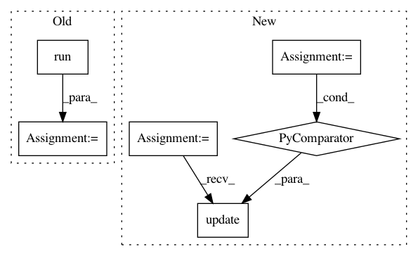

e2d3382bb4132ddb8aa586bf3c4c570be414f6af,tensorforce/models/vpg_model.py,VPGModel,update,#VPGModel#Any#,43
Before Change
// Merge episode inputs into single arrays
_, _, actions, batch_advantage, states = self.merge_episodes(batch)
log_probs, loss, _ = self.session.run([self.log_probabilities, self.loss, self.optimize_op],
{self.state: states,
self.actions: actions,
self.advantage: batch_advantage})
// print("log probs:" + str(log_probs))
// print("loss:" + str(loss))
After Change
fetches = [self.optimize_op, self.log_probabilities, self.loss]
fetches.extend(self.network.internal_state_outputs)
feed_dict = {self.state: states, self.path_length: path_lengths, self.actions: actions, self.advantage: batch_advantage}
feed_dict.update({internal_state: self.internal_states[n] for n, internal_state in enumerate(self.network.internal_state_inputs)})
fetched = self.session.run(fetches, feed_dict)
log_probs = fetched[1]
loss = fetched[2]
In pattern: SUPERPATTERN
Frequency: 3
Non-data size: 6
Instances
Project Name: reinforceio/tensorforce
Commit Name: e2d3382bb4132ddb8aa586bf3c4c570be414f6af
Time: 2017-03-26
Author: aok25@cl.cam.ac.uk
File Name: tensorforce/models/vpg_model.py
Class Name: VPGModel
Method Name: update
Project Name: rail-berkeley/softlearning
Commit Name: a41f2ff4c1437f0b61e76265c31bdec71be0556f
Time: 2019-04-26
Author: hartikainen@berkeley.edu
File Name: softlearning/algorithms/sac.py
Class Name: SAC
Method Name: get_diagnostics
Project Name: rail-berkeley/softlearning
Commit Name: a41f2ff4c1437f0b61e76265c31bdec71be0556f
Time: 2019-04-26
Author: hartikainen@berkeley.edu
File Name: softlearning/algorithms/sql.py
Class Name: SQL
Method Name: get_diagnostics